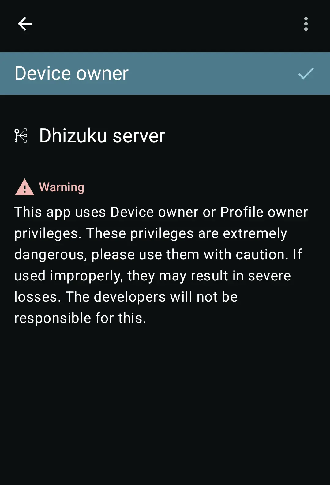

那次出差差点被酒店 USB 坑了之后，我给手机装了 OwnDroid
一个经常出差的产品经理，在酒店充电时差点遭遇 BadUSB 数据窃取，几经周折找到了 OwnDroid，从此设备安全和安静都能自己说了算。
凌晨两点，我的手机正在被人拷数据
那是上个月在杭州，我躺在酒店床上，手机插着床头的 USB 口充电，屏幕黑着，一切看起来正常。直到三点多起来喝水，我瞥到手机屏幕闪了一下——弹出一个"允许 USB 调试？"的对话框，然后又迅速消失了。
我盯着那个黑屏愣了十秒。没有任何弹窗残留、没有任何通知，就像什么都没发生过。但我清楚记得那一行字的位置和字体——那就是 Android 原生的 USB 调试授权弹窗，不会错。
我拔掉充电线，打开开发者选项，USB 调试的授权列表里多了一个陌生的"酒店 USB Hub"。我从没见过这个名字。
这就是 BadUSB 吧。我后背一阵发凉。如果不是刚好起来喝水，如果那个恶意设备的反应再慢两秒，我的微信聊天记录、手机相册里的客户方案截图、甚至手机里存的加密钱包私钥——全部都会被拷走。
那天晚上我没再睡着。
朋友给我推了一个"能把手机管得死死的"小工具
第二天在公司茶水间跟老张吐槽这件事。老张是安全组的，手里总有各种奇奇怪怪的工具。
"你有没有 OwnDroid？"他叼着咖啡杯说。
"什么 Droid？"
"OwnDroid。能把你的 Android 手机设成 Device Owner——相当于拿到了 Android 系统管理员的权限。别人搞 USB 攻击？你直接把 USB 数据信号掐了，线还能充电，但任何数据都传不出去。"
我听完立刻搜了一下。官网首页有一张图，界面很朴素，没什么花里胡哨的功能按钮。老张说这是因为它大部分能力藏在系统层，用户界面反而是最薄的一层。

安装比想象中麻烦，但一切都有迹可循
我用的是小米 13，HyperOS 系统。老张说小米对 Device Admin 权限卡得比较死，激活 OwnDroid 的 Device Owner 可能要绕几个弯。
我打开 OwnDroid，它给出了几条激活路径：ADB 命令行、Shizuku、Dhizuku、还有 Root。我选了最省心的那条——开发者选项里先打开「USB 调试（安全设置）」，然后用 Shizuku 授权。
但第一步就卡了：OwnDroid 报了一个 SecurityException，提示 Neither user 2000 nor current process has android.permission.MANAGE_DEVICE_ADMINS。
我差点放弃。好在 OwnDroid 的界面没让我自己瞎猜，直接给了一个「查看完整错误」按钮。点开之后，错误码和触发条件一条一条列得清清楚楚，还带了一句人话解释："小米的定制系统限制了 Device Admin 权限，开启 USB 调试安全设置或用 Root 绕过。"
我回头去开发者选项里找，果然还有一个开关我没开——HyperOS 最新版把这个选项挪到了更深的位置，藏在「USB 调试」子菜单里的一个「USB 安装」下面。开了之后重新走 Shizuku 流程，这次顺利了。激活完成的那一刻，OwnDroid 弹出一个绿色的对勾，告诉我 Device Owner 已经就位。

老张后来跟我说，不同 ROM 的坑不一样。OPPO 的 ColorOS 需要从官方下载拿 testkey 版本才能激活，因为 OPPO 有签名白名单；三星的 OneUI 因为多用户限制，到现在还没有完美方案。而如果是原生 Android 的 Pixel，ADB 一行命令就搞定了，什么障碍都没有。
真正让我叹服的是那些"看起来很小"的开关
激活完 Device Owner，我终于能看到 OwnDroid 的全部功能了。老实说，那些应用挂起、屏幕限制、密码策略之类的功能我暂时用不上。但有几个开关，我从开启到现在没关过。
禁用 USB 信号
OwnDroid 有一个系统级开关叫「禁用 USB 数据信号」。打开之后，USB 口还能照常充电，但任何数据传输都被切断了——插电脑不会弹调试授权，插 U 盘读不出来，连 USB 有线耳机都会失效。
这是硬件级的信号切断，不是普通的 USB 权限管理。权限管理只管应用能不能用 USB，OwnDroid 直接掐了 USB 数据线里的 D+ 和 D- 信号，充电的 VBUS 和 GND 还留着，所以不影响充电。
那次杭州酒店事件之后，我现在每次出差前都会把这个开关打开。到了公司或者家里要拷文件，再手动关掉。OwnDroid 还支持远程 API 调用——如果以后想让它自动定时开关，文档里列了完整的接口列表。
全局静音
上个月开季度评审，会议室里坐了二十多个人。老板正在讲年度战略，坐在后排的同事手机突然叮了一声——某电商平台的推送通知，整个房间都能听见。
我当时心里一动。OwnDroid 有一个全局静音功能，区别于按音量减到零：
手动把音量减到 0，按一下音量加就恢复了。但 OwnDroid 的全局静音是系统级拦截所有音频输出通道，只有在 OwnDroid 里手动关开关才能恢复。闹钟、通话铃声、媒体播放全部被系统层挡住，普通的音量操作根本绕不过去。
从那之后，每次去客户现场或者大会议室开会，我都会提前 30 秒开一下 OwnDroid 的全局静音。散会了再关掉，比手机自带的「勿扰模式」彻底多了——勿扰模式只管应用通知，全局静音管整个音频硬件。
网络统计
还有一个我用得最多的是网络统计。OwnDroid 能列出每个应用的移动数据和 WiFi 流量，还能看历史周期（日、周、月）。Android 系统自带的设置里只能看当前计费周期，但 OwnDroid 因为有 Device Owner 权限，可以调用 DevicePolicyManager 的统计 API 拉到更长时间的历史数据。
上个月我查了一下，发现装在手机上的一个健康 App 每个月后台偷偷跑了 300 多兆的移动数据。OwnDroid 的网络日志告诉我，它每天凌晨两点到三点之间会访问四五个 IP 地址，每次传几十 KB。我直接在 OwnDroid 里把这个 App 挂起了，世界顿时清静了。
写在 OwnDroid 之后的两件事
第一，激活 Device Owner 是有代价的。Android 安全模型规定，设置 Device Owner 之前设备上不能有任何已添加的账号。我那台小米 13 激活的时候，先手动删了 Google 账号、小米云账号，还有微信登录留下的那个奇怪的 FastBridge 账号。某些 ROM（比如 MIUI）的账号删除按钮会灰掉，这时候要么先注销云服务再删，要么干脆恢复出厂设置——OwnDroid 的文档里明确说，恢复出厂永远是成本最低、成功率最高的路径。
第二，激活之后想再加次要用户或者工作资料会被系统拦住。Android 有个 no_add_managed_profile 限制，Device Owner 激活后，系统不允许再创建非托管的工作资料。我试过在 OwnDroid 里找绕过的方法，文档里说需要 Root，风险比较大，我就放弃了——毕竟我一个人一台设备，也不需要多用户。
但这些限制换来的是设备真正意义上的"我说了算"。USB 信号说掐就掐、音量说静音就静音、流量说监控就监控，这些能力不是什么手机厂商预装的安全管家能给你的——那些应用没有 Device Owner 权限，只能在应用层做事情，触及不到系统级 API。
一套资料拿全的地方
这篇文章里提到的所有细节，包括不同 ROM 的激活路径、错误码含义、每个开关背后的原理，完整的资料可以在几个地方找到。GitHub 仓库是主维护的阵地，Gitee 和 GitCode 也同步了一份，方便国内网络环境下访问。